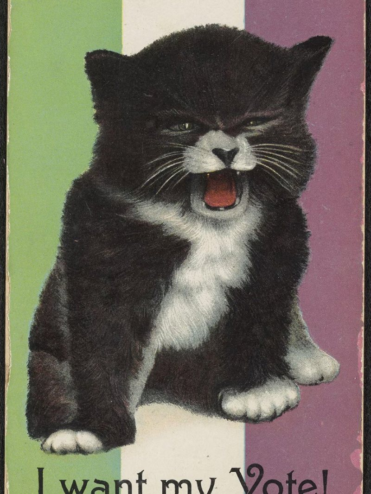
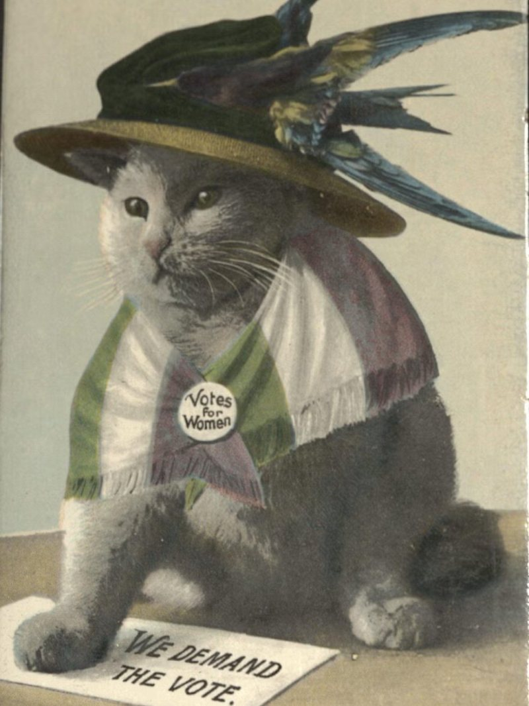

Long before memes, the picture postcard was how people mixed images with a quick message and passed it along. During the format’s heyday, roughly the two decades before World War I, it also became a vehicle for political persuasion, as scholar Kenneth Florey showsJ.
That boom overlapped with the peak of the suffrage campaigns in Britain and the United States. Of the many cards made on both sides of the question, a striking number feature cats, cast either as women’s companions or as stand-ins for women themselves.

The pairing of women and cats has a long and tangled history. In the Edwardian imagination, both belonged to the home: gentle, decorative, comforting. Yet animal lovers, unmarried women, and suffragists were also lumped together as suspect figures, admired and dismissed at once.
Many cards treat a woman asking for the ballot as no more serious than a kitten mewing, set against the colors of the militant Women’s Social and Political Union, a reading historian Krista Cowman offersJ.

Other images are harder to pin down. A well-fed cat in WSPU colors and an extravagant hat may have been meant to mock suffragists as pamperedJ, but its steady gaze and raised paw carry a dignity that supporters could just as easily have claimed.
Editor’s note: The kittens in the voting-line photograph were live animals photographed by Harry Whittier Frees, not taxidermy. The text has been updated to reflect this.
Resources
JSTOR is a digital library for scholars, researchers, and students. JSTOR Daily readers can access the original research behind our articles for free on JSTOR.
Postcards and the New York Suffrage Movement
By Kenneth Florey
New York History, Vol. 98, No. 3/4 (Summer/Fall 2017), pp. 441–464 · Cornell University Press
Go to JSTOR“Doing Something Silly”: The Uses of Humour by the Women’s Social and Political Union, 1903–1914
By Krista Cowman
International Review of Social History, Vol. 52, Supplement 15 (2007), pp. 259–274 · Cambridge University Press
Go to JSTORFrom Pussy Panic to a Fascination with Felines
By Larissa Schulte Nordholt
Gender and Animals in History: Yearbook of Women’s History 42, pp. 188–206 · Amsterdam University Press
Go to JSTORZoöphilpsychosis: Why Animals Are What’s Wrong with Sentimentality
By Tobias Menely
symplokē, Vol. 15, No. 1/2 (2007), pp. 244–267 · University of Nebraska Press
Go to JSTOR